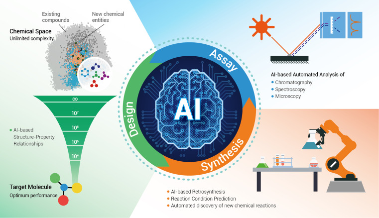
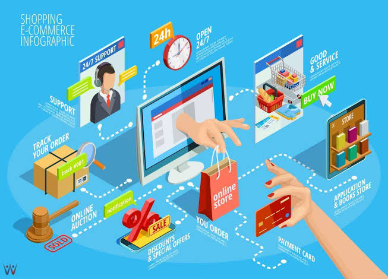
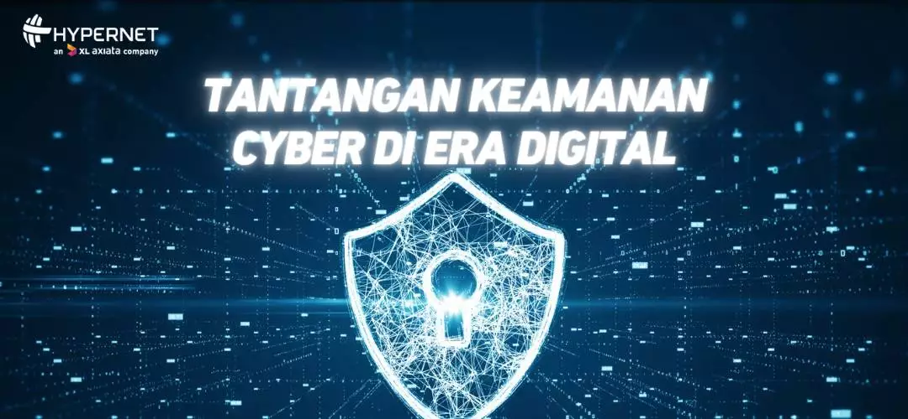
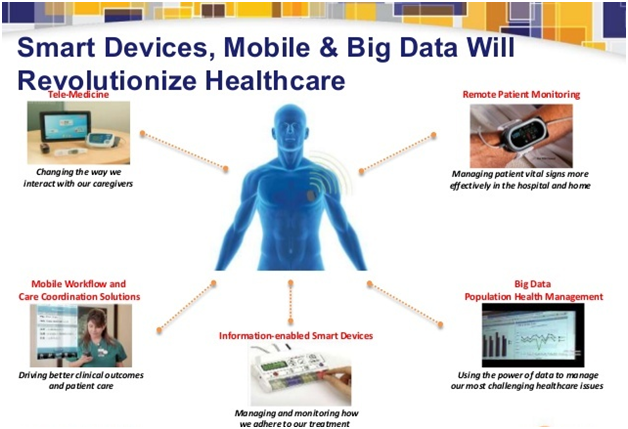

Naila Melany1, Fauziah Zahra², R. Arya Mucharom Dwi Mahesa3
Program Studi Rekayasa Perangkat Lunak, Kampus UPI di Cibiru, Universitas Pendidikan Indonesia
Email : nailamelany.16@upi.edu1, fauziahzahraap.31@upi.edu2,radenmahesa8@upi.edu3
Program Studi Rekayasa Perangkat Lunak, Kampus UPI di Cibiru, Universitas Pendidikan Indonesia
Email : nailamelany.16@upi.edu1, fauziahzahraap.31@upi.edu2,radenmahesa8@upi.edu3
Penggunaan teknologi Artificial Intelligence (AI) telah menjadi solusi vital dalam banyak aspek kehidupan, mempengaruhi bagaimana kita bekerja, berkomunikasi, dan menjalani kehidupan sehari-hari. Tujuan penelitian ini adalah untuk mengkaji dampak penggunaan AI dalam kehidupan sehari-hari. Metode yang digunakan adalah deskriptif kualitatif untuk menganalisis data dari sumber-sumber terpercaya seperti Google Scholar. Di masa depan, AI akan terus berkembang menjadi lebih inovatif dan canggih, mungkin menggantikan peran manusia dalam beberapa pekerjaan. Namun, penting untuk diingat bahwa AI tidak dapat menggantikan aspek emosional manusia. Oleh karena itu, masyarakat, terutama di Indonesia, perlu terus mengembangkan kecerdasan emosional mereka agar tetap relevan di era AI. Manusia sejati adalah mereka yang ....  lihat selengkapnya
Kemajuan teknologi informasi di negara-negara maju telah mendorong lahirnya berbagai inovasi pendidikan, seperti, Pembelajaran online atau distance learning kebijakan ini dipelopori oleh amerika Serikat, Inggris, Cina, dan Jepang dan memungkinkan siswa untuk belajar secara jarak jauh melalui platform online.Platform pendidikan berbasis teknologi informasi, Platform ini membantu meningkatkan mutu pendidikan dasar, menengah, dan perguruan tinggi di Indonesia. Pembelajaran jarak jauh, Kebijakan ini dicanangkan oleh pemerintah Indonesia dengan menggunakan platform e-learning yang wajib diterapkan oleh perguruan tinggi di Indonesia. Penerapan inovasi-inovasi ini di Indonesia diharapkan dapat meningkatkan akses pendidikan bagi semua kalangan masyarakat, meningkatkan kualitas pembelajaran, dan mempersiapkan generasi muda Indonesia untuk menghadapi tantangan masa depan. ..... lihat selengkapnya
Etika TIK berkaitan erat dengan etika profesi, keterhubungan tersebut terutama dalam memahami dan menghormati budaya kerja yang ada, memahami profesi dan jabatan, memahami peraturan perusahaan dan organisasi, dan memahami hukum. Etika profesi yang juga harus dipahami adalah kode etika dalam bidang TIK, dimana pengguna harus mampu memilah sebuah program atau software yang akan mereka gunakan apakah legal atau illegal, karena program apapun digunakan selalu ada aturan penggunaan atau license agreement. Kata Kunci: Etika, Teknologi Informasi dan Komunikasi, Pendidikan. ....  lihat selengkapnya
Penelitian ini bertujuan untuk menganalisis tantangan dan strategi manajemen keamanan siber berbasis Internet of Things (IoT) di Indonesia. Metode yang digunakan adalah telaah pustaka dengan pengumpulan data melalui berbagai basis data akademis seperti Google Scholar, dengan rentang waktu antara tahun 2019 hingga 2024 untuk mencakup literatur terbaru mengenai manajemen risiko berbasis IoT. Hasil penelitian menunjukkan bahwa keamanan informasi menjadi perhatian utama bagi bisnis di seluruh dunia, dengan manajemen keamanan siber menjadi tantangan krusial. Faktor-faktor yang mempengaruhi kinerja keamanan siber suatu negara meliputi ketersediaan tenaga ahli, proses pengambilan keputusan yang terstruktur, manajemen infrastruktur, solusi keamanan yang dirancang khusus, konvergensi OT/TI, respons insiden cepat, dan pelatihan staf. ....  lihat selengkapnya
Saat ini, sektor kesehatan Indonesia menghadapi berbagai tantangan yang memerlukan kebijakan berbasis bukti ilmiah yang kuat. Penggunaan teknologi big data dapat menjadi peluang untuk menyusun kebijakan kesehatan yang efektif dan efisien, meskipun penggunaannya masih didominasi oleh sektor swasta. Penelitian ini bertujuan untuk mengevaluasi penggunaan big data dalam perumusan kebijakan publik di sektor kesehatan. ....  lihat selengkapnya